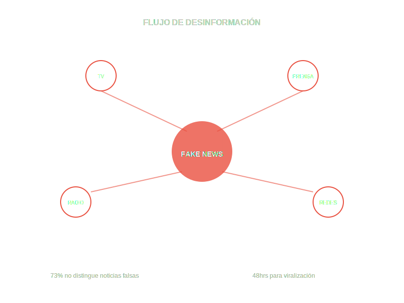

Descubre cómo se construyen y propagan las noticias falsas en Chile.
Una radiografía del engaño mediático.
73%
de los chilenos
no puede distinguir entre una noticia real y una noticia falsa en redes sociales,
según el último estudio de desinformación digital en Chile.

El Ciclo del Engaño
1
Creación
Se fabrica información falsa o se distorsiona un hecho real para generar una narrativa específica que beneficie intereses políticos o económicos.
2
Amplificación
Medios de comunicación masivos y figuras influyentes replican la información sin verificar fuentes, dándole credibilidad institucional.
3
Viralización
Las redes sociales amplifican exponencialmente el alcance, donde usuarios comparten sin cuestionar, creando una "verdad" artificial.
4
Sedimentación
La mentira se instala en el imaginario colectivo como verdad histórica, influenciando decisiones políticas y sociales a largo plazo.
48hrs
tiempo promedio
que toma una noticia falsa en volverse viral y ser aceptada como verdad por millones de personas,
según estudios del MIT sobre propagación de desinformación.
Casos Históricos
1973
Plan Z
Documento fabricado que justificó el golpe militar, atribuyendo planes de violencia a la Unidad Popular sin evidencia documental.
2017
Montaje Digital
Capturas de WhatsApp falsificadas por Carabineros para incriminar a comuneros mapuches, posteriormente desmentidas por peritos.
2020
Desinformación Viral
Falsa acusación contra joven en Metro Baquedano, difundida masivamente antes de verificar los hechos.
∞
impacto perpetuo
Una vez instalada en el inconsciente colectivo, una mentira puede perdurar décadas,
influyendo en la percepción histórica y las decisiones políticas futuras de una sociedad.